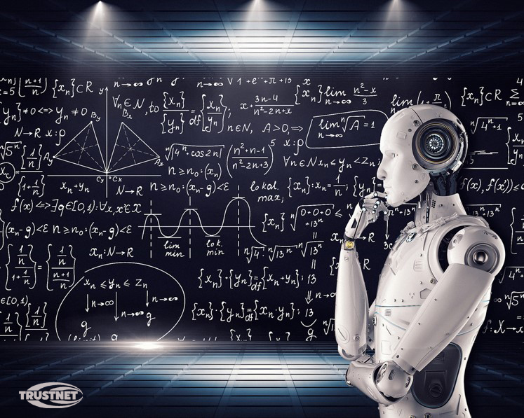
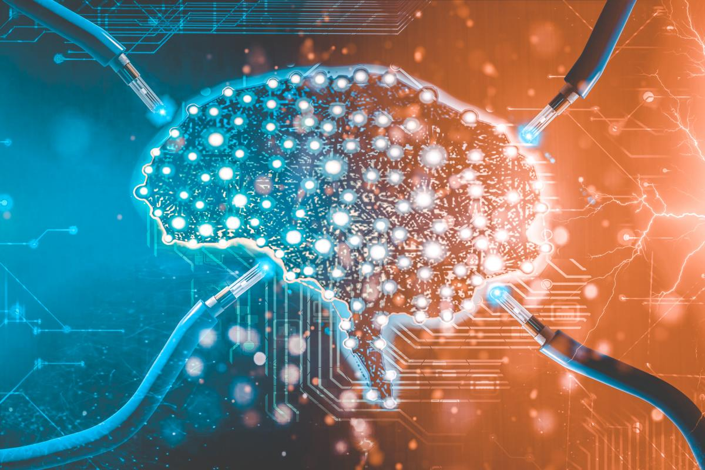

El término inteligencia artificial fue adoptado en 1956, pero se ha vuelto más popular hoy día gracias al incremento en los volúmenes de datos, algoritmos avanzados, y mejoras en el poder de cómputo y el almacenaje.
La investigación inicial de la inteligencia artificial en la década de 1950 exploraba temas como la solución de problemas y métodos simbólicos. En la década de 1960, el Departamento de Defensa de los Estados Unidos mostró interés en este tipo de trabajo y comenzó a entrenar computadoras para que imitaran el razonamiento humano básico. Por ejemplo, la Defense Advanced Research Projects Agency (DARPA, Agencia de Proyectos de Investigación Avanzada de Defensa) realizó proyectos de planimetría de calles en la década de 1970. Y DARPA produjo asistentes personales inteligentes en 2003, mucho tiempo antes que Siri, Alexa o Cortana fueran nombres comunes.
Este trabajo inicial abrió el camino para la automatización y el razonamiento formal que vemos hoy en las computadoras, incluyendo sistemas de soporte a decisiones y sistemas de búsqueda inteligentes que pueden ser diseñados para complementar y aumentar las capacidades humanas.
La inteligencia artificial (IA) hace posible que las máquinas aprendan de la experiencia, se ajusten a nuevas aportaciones y realicen tareas como seres humanos. La mayoría de los ejemplos de inteligencia artificial sobre los que oye hablar hoy día – desde computadoras que juegan ajedrez hasta automóviles de conducción autónoma – recurren mayormente al aprendizaje profundo y al procesamiento del lenguaje natural. Empleando estas tecnologías, las computadoras pueden ser entrenadas para realizar tareas específicas procesando grandes cantidades de datos y reconociendo patrones en los datos.
¿Por qué es importante?
La inteligencia artificial automatiza el aprendizaje y descubrimiento repetitivos a través de datos. La inteligencia artificial es diferente de la automatización de robots basada en hardware. En lugar de automatizar tareas manuales, la inteligencia artificial realiza tareas computarizadas frecuentes de alto volumen de manera confiable y sin fatiga. Para este tipo de automatización, la investigación humana sigue siendo fundamental para configurar el sistema y hacer las preguntas correctas.
La inteligencia artificial se adapta a través de algoritmos de aprendizaje progresivo para permitir que los datos realicen la programación. La inteligencia artificial encuentra estructura y regularidades en los datos de modo que el algoritmo adquiere una habilidad: el algoritmo se convierte en un clasificador o predictor. De este modo, así como el algoritmo puede aprender a jugar ajedrez, puede aprender también que producto recomendar a continuación en línea. Y los modelos se adaptan cuando se les proveen nuevos datos.
La retropropagación es una técnica de inteligencia artificial que permite al modelo hacer ajustes, a través de capacitación y datos agregados, cuando la primera respuesta no es del todo correcta.
La inteligencia artificial logra una increíble precisión a través de redes neuronales profundas – lo cual antes era imposible. Por ejemplo, sus interacciones con Alexa, Google Search y Google Photos están todas basadas en el aprendizaje profundo – y se siguen volviendo más precisas cuanto más las usamos. En el campo de la medicina, las técnicas de inteligencia artificial del aprendizaje profundo, clasificación de imágenes y reconocimiento de objetos se pueden emplear ahora para detectar cáncer en MRIs (imágenes de resonancia magnética) con la misma precisión que radiólogos altamente capacitados.
¿Cómo se utiliza la inteligencia artificial?
Atencion a la salud:
Las aplicaciones de IA pueden proporcionar lecturas personalizadas de medicina y rayos X. Los asistentes personales de atención a la salud pueden actuar como asesores, recordándole tomar sus pastillas, hacer ejercicio o comer más sano.
Manufactura:
La inteligencia artificial puede analizar datos de IoT de fábrica cuando éstos se transmiten por streaming desde equipo conectado para pronosticar carga y demanda esperadas utilizando redes recurrentes, un tipo específico de red de aprendizaje a fondo que se utiliza con datos en secuencia.
Retail:
La inteligencia artificial proporciona recursos para compras virtuales que ofrecen recomendaciones personalizadas y analizan opciones de compra con el consumidor. Las tecnologías de gestión de inventario y disposición de sitios también se verán mejoradas con la inteligencia artificial.
Bancos:
La inteligencia artificial mejora la velocidad, la precisión y la efectividad de los esfuerzos humanos. En las instituciones financieras, se pueden emplear técnicas de inteligencia artificial para identificar qué transacciones tienen la probabilidad de ser fraudulentas, adoptar evaluación de crédito rápida y precisa, así como también automatizar de forma manual tareas de gestión de datos intensas.
¿Cuáles son los retos de usar la inteligencia artificial?
La inteligencia artificial habrá de transformar todas las industrias, pero tenemos que entender sus límites. La limitación principal de la inteligencia artificial es que aprende de los datos. No hay otra forma en que se pueda incorporar el conocimiento. Eso significa que cualquier imprecisión en los datos se verá reflejada en los resultados. Y cualquier capa adicional de predicción o análisis se tiene que agregar por separado.
Los sistemas de IA actuales son entrenados para realizar una tarea claramente definida. El sistema que juega póquer no puede jugar solitario o ajedrez. El sistema que detecta fraude no puede conducir un automóvil o brindarle asesoría legal. De hecho, un sistema de IA que detecta fraude en la atención a la salud no puede detectar con precisión fraude en impuestos o en reclamos de garantías. En otras palabras, estos sistemas son muy, muy especializados. Se enfocan en una sola tarea y están lejos de comportarse como humanos.
De la misma forma, los sistemas de autoaprendizaje no son sistemas autónomos. Las tecnologías de inteligencia artificial imaginadas que usted ve en las películas y en la televisión siguen siendo ciencia ficción. Pero las computadoras que pueden sondear datos complejos para aprender y perfeccionar tareas específicas se están volviendo bastante comunes.
¿Cómo funciona la inteligencia artificial?
La inteligencia artificial funciona combinando grandes cantidades de datos con procesamiento rápido e iterativo y algoritmos inteligentes, permitiendo al software aprender automáticamente de patrones o características en los datos. La inteligencia artificial es un vasto campo de estudio que incluye muchas teorías, métodos y tecnologías, además de los siguientes subcampos principales:
El aprendizaje basado en máquina automatiza la construcción de modelos analíticos. Emplea métodos de redes neurales, estadística, investigación de operaciones y física para hallar insights ocultos en datos sin ser programada de manera explícita para que sepa dónde buscar o qué conclusiones sacar.
Una red neural es un tipo de aprendizaje basado en máquina que se compone de unidades interconectadas (como neuronas) que procesa información respondiendo a entradas externas, transmitiendo información entre cada unidad. El proceso requiere múltiples pases en los datos para hallar conexiones y obtener significado de datos no definidos.
El aprendizaje a fondo utiliza enormes redes neurales con muchas capas de unidades de procesamiento, aprovechando avances en el poder de cómputo y técnicas de entrenamiento mejoradas para aprender patrones complejos en grandes cantidades de datos. Algunas aplicaciones comunes incluyen reconocimiento de imágenes y del habla.
El cómputo cognitivo es un subcampo de la inteligencia artificial que busca una interacción de tipo humano con las máquinas. Utilizando la inteligencia artificial y el cómputo cognitivo, el objetivo final es que una máquina simule procesos humanos a través de la capacidad de interpretar imágenes y el habla – y luego hable de forma coherente como respuesta.
La visión por computadora se apoya en el reconocimiento de patrones y el aprendizaje profundo para reconocer lo que hay en una imagen o video. Cuando las máquinas pueden procesar, analizar y entender imágenes, pueden capturar imágenes o videos en tiempo real e interpretar sus alrededores.
El procesamiento del lenguaje natural (NLP, por sus siglas en inglés) es la capacidad de las computadoras de analizar, entender y generar lenguaje humano, incluyendo el habla. La etapa siguiente de NLP es la interacción en lenguaje natural, que permite a los humanos comunicarse con las computadoras utilizando lenguaje normal de todos los días para realizar tareas.
 El término inteligencia artificial fue adoptado en 1956, pero se ha vuelto más popular hoy día gracias al incremento en los volúmenes de datos, algoritmos avanzados, y mejoras en el poder de cómputo y el almacenaje.
El término inteligencia artificial fue adoptado en 1956, pero se ha vuelto más popular hoy día gracias al incremento en los volúmenes de datos, algoritmos avanzados, y mejoras en el poder de cómputo y el almacenaje. La inteligencia artificial automatiza el aprendizaje y descubrimiento repetitivos a través de datos. La inteligencia artificial es diferente de la automatización de robots basada en hardware. En lugar de automatizar tareas manuales, la inteligencia artificial realiza tareas computarizadas frecuentes de alto volumen de manera confiable y sin fatiga. Para este tipo de automatización, la investigación humana sigue siendo fundamental para configurar el sistema y hacer las preguntas correctas.
La inteligencia artificial automatiza el aprendizaje y descubrimiento repetitivos a través de datos. La inteligencia artificial es diferente de la automatización de robots basada en hardware. En lugar de automatizar tareas manuales, la inteligencia artificial realiza tareas computarizadas frecuentes de alto volumen de manera confiable y sin fatiga. Para este tipo de automatización, la investigación humana sigue siendo fundamental para configurar el sistema y hacer las preguntas correctas.